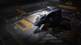

Top speed / boost
278 / 370 m/s
The most heavily armed small ship in the game. Three large hardpoints are unheard-of on a small hull; backed by strong shields and real speed, it out-guns nearly every small ship and many mediums from any pad. Its ceiling is thin armour and shallow internals — a glass cannon that wins by hitting first and hitting hard, not by trading blows.

This ship's 1–100 suitability rating reflects its fully-engineered fit for this role, scored against every ship in the role. See how ships are rated.
The Kestrel Mk II is Saud Kruger's surprise contribution to the combat scene: a small-pad hull carrying three large hardpoints, a count normally reserved for mediums and large ships. Backed by strong shields, four utilities and genuine speed, it delivers a main battery that out-guns nearly every small ship and many mediums, while keeping the universal small-pad access that lets it dock anywhere.
It pays for that firepower with fragility. Its armour is thin and its internals shallow (one military slot, modest optionals), so it can't tank a prolonged brawl the way a Cobra Mk V or a medium can. The Kestrel is a glass cannon scaled to a small hull — it wins by hitting harder and faster than its size suggests, then disengaging before its modest defences give out.
Alpha-heavy small-pad combat: RES bounty hunting where firepower ends fights fast, picking off priority targets, and any engagement where three large guns settle things before the thin hull matters.
Four things make the Kestrel the small-pad firepower king:
Thin armour, a single military slot and shallow optionals mean it can't tank a long fight — once shields drop, it's brittle. Its class-5 plant is also stretched feeding three large guns. The Kestrel is a glass cannon: devastating on the attack, fragile under sustained return fire. Build it to end fights quickly, not to grind them.
Three large hardpoints on a small hull, backed by a strong ~338 MJ shield and universal pad access, lead the score; thin 135 armour and a stretched class-5 distributor cap it.
The 85/100 headline is a verdict against the combat role's priority-ordered factors. Each factor carries a weight (its share of 100); this hull earns part of each based on how it performs against the whole field. The points sum to the rating.
| Role factor | Score | Why this score |
|---|---|---|
| Hardpoints | 30/30 | Three Large plus two Small hardpoints on a small hull is unmatched in the small-pad field; nothing else its size carries three large mounts, rivalling a Krait Mk II's main battery from a pad that docks anywhere. |
| Power distributor | 7/10 | Only a class-5 power distributor must feed three large guns plus boost, the most strained system on the hull; A-rating and Charge Enhanced are mandatory just to sustain fire, and it stays the build's tightest constraint. |
| Shield | 14/15 | A ~338 MJ base shield is strong for a small ship and engineers past 1,100 MJ on a Reinforced bi-weave with two Heavy-Duty boosters across four utilities; this is the only real tank the hull has. |
| Armour & internals | 8/15 | Base armour of just 135 with one class-4 military slot and shallow optionals (5·4·3·2·2·2·1) means it cannot trade blows; once shields drop it is brittle, the clear limiter on the score. |
| Agility | 16/20 | 278/370 m/s and good handling let it dictate range and disengage, and Dirty Drives push boost near 450 m/s; competent but not class-leading, outturned by the Vulture, Eagle and Courier. |
| Utility & flexibility | 10/10 | Four utility mounts fit a full shield-booster, chaff and heat-sink suite, and small-pad access with no rank or permit gate lets it base and turn in at outpost-only stations medium fighters cannot reach. |
| Weighted total | 85/100 | Matches the headline suitability rating for this ship in this role. |
Weights are an editorial decomposition of the role's stated priority order — not an in-game formula. Bar length shows how fully each factor is earned; the longest factors carried the score, the shortest are where it gave points away. See how ships are rated.
Both tables rate ships for the combat role specifically. The role column is the hardpoint loadout — the raw weapon mounts behind the damage.
| Ship | Class | Hardpoints | Pros & cons vs Kestrel Mk II | Rating |
|---|---|---|---|---|
| Kestrel Mk II this | Small | 3L 2S | — this hull (baseline) | 85 |
| Vulture | Small | 2L | More agile; tougher armour; far cheaperOne fewer large gun; power-starved | 80 |
| Cobra Mk V | Small | 3M 2S | Tankier; deeper internals; cheaperMedium guns, not large — less alpha | 78 |
| Imperial Courier | Small | 3M | Faster; superb shields; very cheapMedium guns; paper hull | 70 |
| Viper Mk IV | Small | 2M 2S | Tough; cheap; forgivingFar less firepower | 66 |
| Viper Mk III | Small | 2M 2S | Faster; very cheapFragile; far less firepower | 63 |
| Diamondback Scout | Small | 2M 2S | Cool-running; four utilities; cheapModest guns; far less alpha | 60 |
| Eagle Mk II | Small | 3S | Best agility; dirt cheapTiny guns; eggshell hull | 55 |
The Kestrel tops the small combat class for firepower outright — nothing else its size carries three large guns. The Vulture is the tougher, cheaper two-large alternative and the Cobra Mk V the more durable all-rounder, but for pure small-pad alpha the Kestrel is unmatched.
| Ship | Class | Hardpoints | Pros & cons vs Kestrel Mk II | Rating |
|---|---|---|---|---|
| Fer-de-Lance | Medium | 1H 4M | Huge mount; far more tank and roomMedium pad; far pricier | 93 |
| Krait Mk II | Medium | 3L 2M | Same three large mounts, plus tank and SLFMedium pad; far pricier | 90 |
| Python Mk II | Medium | 4L 2M | Four large mounts; far more tankMedium pad; far pricier | 90 |
| Alliance Chieftain | Medium | 2L 1M 3S | Agile tank; military slots; more durableMedium pad; pricier | 88 |
| Vulture | Small | 2L | The cheaper, tougher small-pad alternativeOne fewer large gun | 80 |
The Kestrel's three large guns rival a Krait Mk II's main battery from a small pad — remarkable — but the mediums back their guns with tank and internals the Kestrel can't match. Fly the Kestrel for small-pad firepower and reach; step up to a medium when you need to survive longer fights.
At ~13.8M Cr the Kestrel is pricey for a small ship — you pay for those three large hardpoints — but it carries no rank or permit gate. Engineering three large guns plus a strong shield is the bulk of the cost.
It's a premium small-pad fighter: more expensive than a Cobra Mk V or Vulture, justified only if you value its unique firepower-and-reach combination over their durability and lower price.
You're paying for three large guns on a small hull — a unique capability. If raw alpha with universal pad access is the goal, the price is justified; if not, the Vulture or Cobra Mk V offer more per credit.
A glass-cannon shield-tank fit built around the three large guns. Initial is buy-only; A-rated is the combat-ready baseline; Engineered applies the house combat pattern, leaning on shields since the armour is thin.
| Slot | Initial · buy-only | A-Rated · no eng | Engineered | Notes |
|---|---|---|---|---|
| Hardpoints | ||||
| Large 1 | 3E Pulse Laser (Gimballed) | 3C Multi-Cannon (Gimballed) | G5 Overcharged + Corrosive Shell | Primary large mount; the single Corrosive Shell strips armour resistance for the whole battery. |
| Large 2 | 3C Multi-Cannon (Gimballed) | 3C Multi-Cannon (Gimballed) | G5 Overcharged + Auto Loader | Second large multi-cannon; Auto Loader removes reloads so it never stops firing. |
| Large 3 | 3C Multi-Cannon (Gimballed) | 3C Beam Laser (Gimballed) | G5 Efficient + Thermal Vent | Large beam for shield-stripping; Thermal Vent vents heat so it runs cold on a heat-tight small hull. |
| Small 1 | 1G Multi-Cannon (Gimballed) | 1G Pulse Laser (Gimballed) | G5 Efficient + Phasing Sequence | Small pulse adds heat-free shield damage; Efficient keeps draw and heat low. |
| Small 2 | — | 1G Pulse Laser (Gimballed) | G5 Efficient + Phasing Sequence | Second small pulse; left empty on the buy-only fit, fitted once the hull is paid off. |
| Utility Mounts | ||||
| Utility 1 | 0A Shield Booster | 0A Shield Booster | G5 Heavy Duty + Super Capacitors | First Heavy-Duty shield booster — the cheapest large gain on the bi-weave's raw MJ. |
| Utility 2 | — | 0A Shield Booster | G5 Heavy Duty + Super Capacitors | Second Heavy-Duty booster; the Kestrel leans on shields because the armour is thin. |
| Utility 3 | — | 0I Chaff Launcher | G1 Ammo Capacity (no experimental effect) | Optional / low-priority — Ammo Capacity adds chaff salvos. Chaff spoils gimballed and turreted fire. |
| Utility 4 | — | 0I Heat Sink Launcher | G1 Ammo Capacity (no experimental effect) | Optional / low-priority — Ammo Capacity adds heat-sink charges. Dumps heat for silent running and Thermal-Vent resets. |
| Core Internals | ||||
| Bulkheads | Lightweight Alloy | Military Grade Composite | G5 Heavy Duty + Deep Plating | |
| Power Plant | 5E Power Plant | 5A Power Plant | G5 Overcharged + Thermal Spread | A-rate alongside the distributor; Overcharged feeds three large guns and a strong shield, Thermal Spread bleeds the extra heat. |
| Thrusters | 5E Thrusters | 5A Thrusters | G5 Dirty Drive Tuning + Drag Drives | A-rated + Dirty Drives give the speed to dictate range and disengage. |
| Frame Shift Drive | 4E Frame Shift Drive | 4A Frame Shift Drive | G3 Increased Range + Mass Manager | A-rated to reach RES sites and turn-ins; only G3 range — combat needs no jump monster. |
| Life Support | 1E Life Support | 1D Life Support | G5 Lightweight (no experimental effect) | D-rate to save mass on a size-1 slot; Lightweight trims more, and life support has no experimental effect. |
| Power Distributor | 5E Power Distributor | 5A Power Distributor | G5 Charge Enhanced + Super Conduits | A-rate this FIRST — three large guns plus boost strain the class-5 distributor harder than anything else. |
| Sensors | 2E Sensors | 2D Sensors | G5 Lightweight (no experimental effect) | Drop to D and go Lightweight; combat needs no sensor range, so save the mass. |
| Fuel Tank | 4C Fuel Tank | 4C Fuel Tank | (No blueprint available) | Stock C tank; fuel capacity is fixed and cannot be engineered. |
| Military Slots | ||||
| Military 1 | 4E Hull Reinforcement | 4D Hull Reinforcement | G5 Heavy Duty + Deep Plating | The lone military slot; Heavy-Duty hull reinforcement is the cheapest large multiplier on the thin armour. |
| Optional Internals | ||||
| Size 5 | 5E Shield Generator | 5C Bi-Weave Shield Generator | G5 Reinforced + Hi-Cap | Bi-weave regenerates fast under fire; Reinforced maximises its low base MJ and Hi-Cap adds more. |
| Size 4 | 4E Cargo Rack | 4A Shield Cell Bank | G4 Specialised (no experimental effect) | Optional / low-priority — Specialised cuts the cell bank's heat and power spike. Burst shield healing for emergencies. |
| Size 3 | — | 3D Hull Reinforcement | G5 Heavy Duty + Deep Plating | More Heavy-Duty hull where the slot allows — armour stacks linearly. |
| Size 2 | — | 2A Shield Cell Bank | G4 Specialised (no experimental effect) | Optional / low-priority — Specialised cuts the cell bank's heat and power spike. Burst shield healing for emergencies. |
| Size 2 | — | 2D Module Reinforcement | (No blueprint available) | Module Reinforcement spreads penetrating-hit damage across internals; not engineerable. |
| Size 2 | — | 2D Module Reinforcement | (No blueprint available) | Second Module Reinforcement protects the cores that keep you flying; not engineerable. |
| Size 1 | — | 1D Hull Reinforcement | G5 Heavy Duty + Deep Plating | Optional / low-priority — Expanded Probe Scanning widens probe coverage. Maps planets for exploration data. |
| Open in planner / Export | ||||
| Open in Coriolis | open | open | open | One-click open at coriolis.io. |
| Open in EDSY | open | open | open | One-click open at edsy.org. |
| Copy SLEF | Copies the raw Ship Loadout Export Format for that state. | |||
With thin armour and one military slot, the Kestrel survives on shields — a Reinforced bi-weave, two Heavy-Duty boosters and a pair of cell banks. End fights before the shield drops; the hull underneath is brittle.
Buy the hull on stock Lightweight Alloy and fit the largest shield the class-5 bay allows plus the military-slot reinforcement — armour spend waits until the guns and shield are paid off.
Arm the three large mounts with two gimballed multi-cannons and a gimballed pulse laser for shield-stripping, plus one small gimballed multi-cannon; the second small mount, the spare utilities and the deeper optionals stay empty until the hull is paid off.
Even unengineered, three large guns make it a fearsome RES attacker — just don't linger once shields fall.
A-rating priority for a small-pad gunboat:
Fill the deeper optionals with shield cell banks, hull and module reinforcement — and put a small 1D Hull Reinforcement in the size-1 slot rather than a surface scanner; this is a combat fit with nothing to map.
Three large guns tax a small ship's power — A-rate the distributor and plant, then pour the rest into the shield. Military-grade bulkheads add a real buffer, but the shield is still what keeps you alive.
The house combat pattern on a small gunboat, weighted to shields. Pin blueprints for remote G1→G5 application; visit in person for experimentals.
| Module | Blueprint | Experimental | Engineer |
|---|---|---|---|
| Power Plant (5) | Overcharged (G5) | Thermal Spread | Hera Tani |
| Thrusters (5) | Dirty Drive Tuning (G5) | Drag Drives | Professor Palin / Mel Brandon |
| Multi-Cannons (3) | Overcharged (G5) | Corrosive Shell (one) / Auto Loader (rest) | Tod McQuinn |
| Beam Laser (3) | Efficient (G5) | Thermal Vent | Broo Tarquin |
| Pulse Lasers (1) | Efficient (G5) | Phasing Sequence | Broo Tarquin |
| Power Distributor (5) | Charge Enhanced (G5) | Super Conduits | The Dweller |
| Bi-Weave Shield (5) | Reinforced (G5) | Hi-Cap | Lei Cheung |
| Shield Boosters | Heavy Duty (G5) | Super Capacitors | Didi Vatermann |
| Bulkheads | Heavy Duty (G5) | Deep Plating | Selene Jean |
| Hull Reinforcement | Heavy Duty (G5) | Deep Plating | Selene Jean |
Moderate — three large weapon blueprints plus core and shield G5s; heavier than a typical small ship's grind. With a complete inventory this is spend, not farm. Ask for exact per-blueprint counts if needed.
Approximate progression across the three states (figures are representative, not exact rolls):
| Stat | Initial | A-rated | Engineered |
|---|---|---|---|
| Top speed (boost) | 360 m/s | 360 m/s | ~450 m/s |
| Shield (MJ) | ~470 | ~650 | ~1,100+ |
| Armour (eff.) | 135 | ~390 | ~750 |
| Alpha damage | very high | very high | elite (3 large) |
| Tank | shield-only | shield + buffer | shield + armour buffer |
Engineered, the Kestrel pairs a 1,100 MJ shield with three large guns and 450 m/s of boost — small-pad firepower that rivals a medium's. Military Grade Composite bulkheads, two engineered hull reinforcements (4D in the military slot, 3D in an optional) and a third small 1D plate in the size-1 slot give it a genuine armour buffer, but the shield and shield cells are still the primary tank — it wins through alpha and recharge, not raw durability.
Any Haz RES near an outpost suits it. Around your home base, RES and massacre payouts double as Imperial-standing progress — and the small pad reaches outpost-only turn-ins.
The Kestrel Mk II is the small-pad firepower king: three large hardpoints and strong shields on a hull that docks anywhere, with no rank gate. Its thin armour makes it a glass cannon, but for sheer alpha from a small ship — rivalling mediums twice its size — nothing else comes close. Hit hard, hit first, and disengage.
Figures on this page are verified against the sources below.